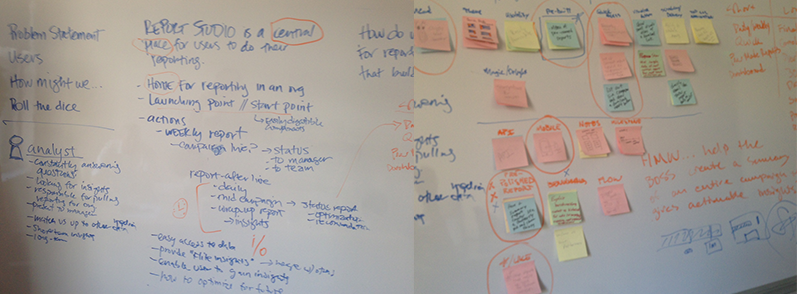
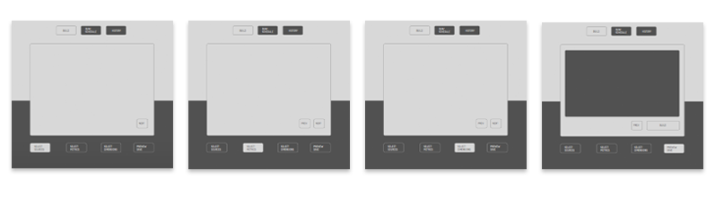
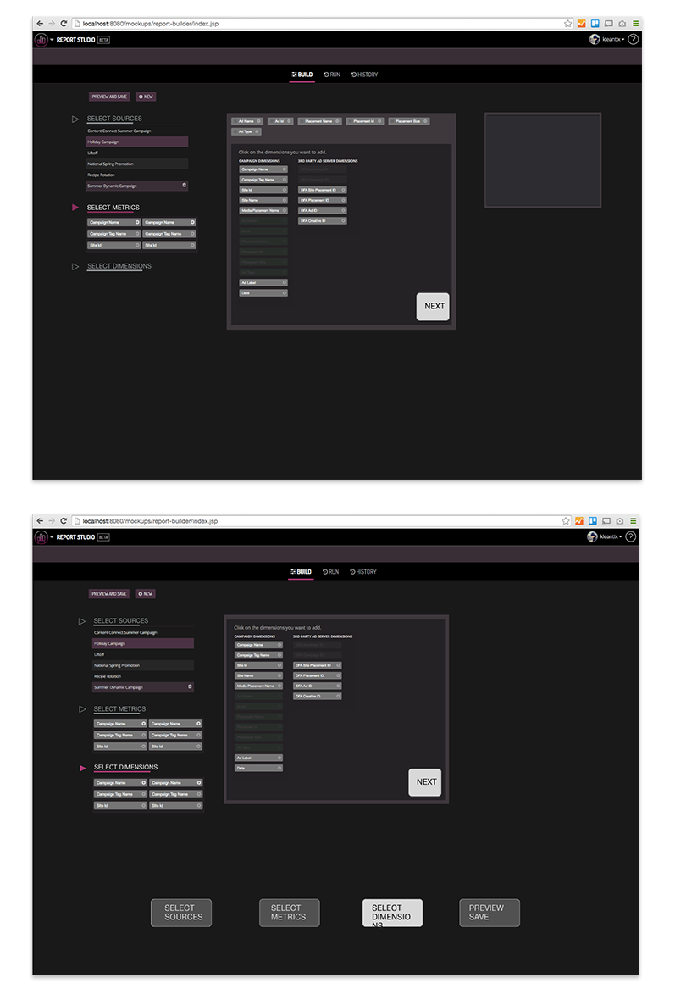
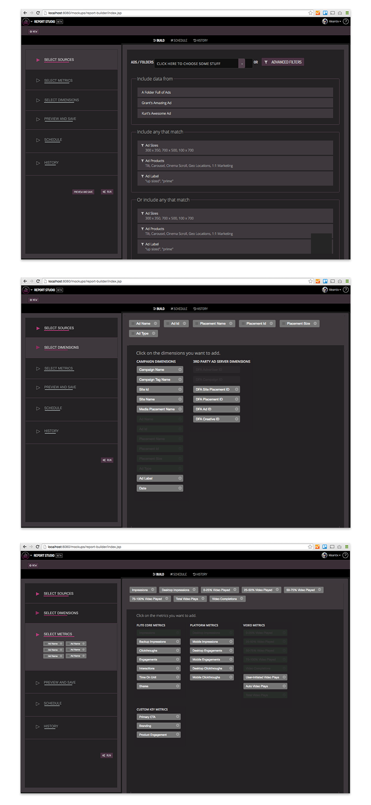
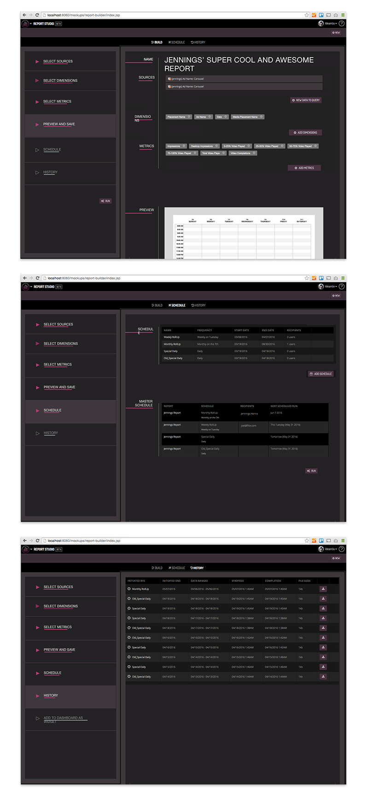

 <!DOCTYPE html>

<html>

<title>Flite Advertising Reports UX and Design, JenningsHanna.com, Jennings Hanna is an Interaction Designer and Content Strategist</title></title>

<meta name="viewport" content="width=device-width, initial-scale=1">

 <!-- CSS RESET ERIC MEYER
 <link rel="stylesheet" type="text/css" href="assets/reset.css" />
 -->
<link rel="shortcut icon" href="/favicon.ico" type="image/x-icon">
<link rel="icon" href="/favicon.ico" type="image/x-icon">
 
 <!-- Skeleton CSS -->
 <link rel="stylesheet" href="assets/skeleton/normalize.css">
 <link rel="stylesheet" href="assets/skeleton/skeleton.css">
 
 <!-- MY CSS -->
 <link rel="stylesheet" type="text/css" href="assets/style.css" />
 
 <!-- GOOGLE WEB FONT - 'Open Sans' Normal 400 -->
 <link href='http://fonts.googleapis.com/css?family=Open+Sans' rel='stylesheet' type='text/css'>
 
  <!-- FONT AWESOME -->
 <link rel="stylesheet" href="https://maxcdn.bootstrapcdn.com/font-awesome/4.4.0/css/font-awesome.min.css">

</html>

<body >
	<div class="container top">
		<div id="pencil"></div>
		<div class="row">
			<div class="twelve columns">
		<p class="color"><a href="enter.html"></a>I was brought on to Flite as a contract designer to help with UX/UI and to design a new reporting tool for their platform. Flite's clients include the New York Times, Conde Nast, VICE media and many other top-notch publishers. The startup is about five years old. They create tools for traditional creatives, mostly in large publishing or advertising firms. Clients use the tools to create multifaceted media advertisements, optimize marketing and advertising campaigns, and generate complex and detailed reports. My work involved helping the cosmos team, the reporting team, build a new reporting tool. I worked with the team through ideation, concept, testing, and production of this new reporting tool.</p>
				
				<p class="color">We began by defining a mental model of the user archetype of those who will be using the reporting features. We outlined behaviors and goals of those behaviors, then sorted them by priority. And by that I mean priority for developers, users, and the overall product roadmap. We discussed the behaviors we wanted to re-enforce and those we wanted not to. I lead the team through multiple design thinking workshops and documented our output thoroughly. Here are a few examples of our whiteboards:</p>
				
				<p class="color">After a quick round of user testing on the existing tool, I provided the team with the feedback and made low fidelity wireframes. They show what users indicated as their most important interactions and flows that felt right to them. The wires below show only core interactions intentionally. The purpose is to not let the complexity and details of a tool like this get in the way of the most useful behaviors. Those we'd chosen earlier as a team to re-enforce.</p>
				
				<p class="color">After a few iterations team Cosmos and I agreed on a interaction design direction. We immediately started compiling it in front-end code. At Flite, everyone codes, which was nice for me as I like to do front-end but don't usually get a chance to sit down with a team and dig in on it. I really enjoyed making these prototypes in HTML/CSS/Javascript and learned a lot about frameworks like Twitter Bootstrap, React JS, and JSP.</p>
				
				<p class="color">We developed early design prototype's which we then did follow up user testing with to gather feedback and more quickly and accurately align with our users. Internal stakeholders on the business development team were also involved to provide assurance of alignment with the business and product roadmap goals. I then used all of this input to design and deliver the final platform below.</p>
				
				
				<p class="color">Working with Cosmos and everyone at Flite was a great experience for me to be in a fast paced and uber talented software building environment. The project was fun. All I can say is I wished it would have last longer but I'm sure I'll work with many of them someday in the future.</p>
			</div>
		</div>
		<div class="row">
			<div id="pencil2"></div>
		</div>
		<div class="row portfolio-cards">
			<div class="four columns">
				<div class="card cornell">
					<p class="color"><a href="cornell.html">Meyer Cancer Center NYC</a></p>
				</div>
			</div>
			<div class="four columns">
				<div class="card deja">
					<p class="color"><a href="deja.html">Send yourself postcards in the future</a></p>
				</div>
			</div>
			<div class="four columns">
				<div class="card spiral">
					<p class="color"><a href="spiral.html">Spiral</a></p>
				</div>
			</div>
		</div>
	</div>
	
<script src="https://ajax.googleapis.com/ajax/libs/jquery/1.11.1/jquery.min.js"></script>
<!-- <script src="assets/js/jquery.animate-colors-min.js"></script> -->
<script src="//cdn.jsdelivr.net/jquery.color-animation/1/mainfile"></script>
<script src="assets/js/spectrum.js"></script>
<script src="assets/js/imgswap.js"></script>
<script src="assets/js/analytics.js"></script>

</body>